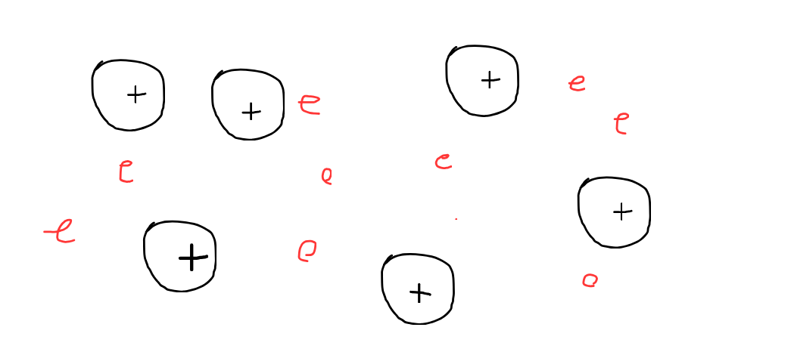
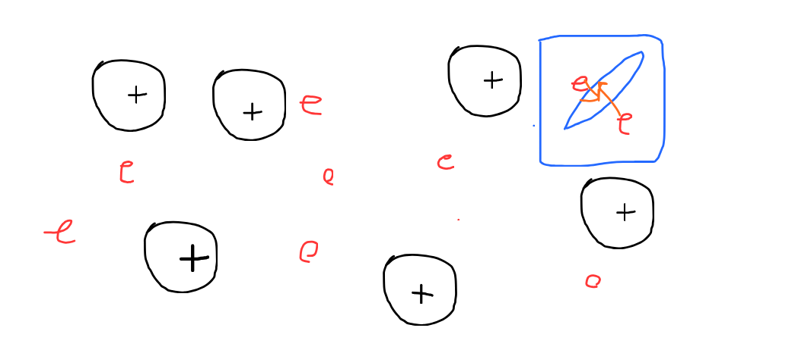
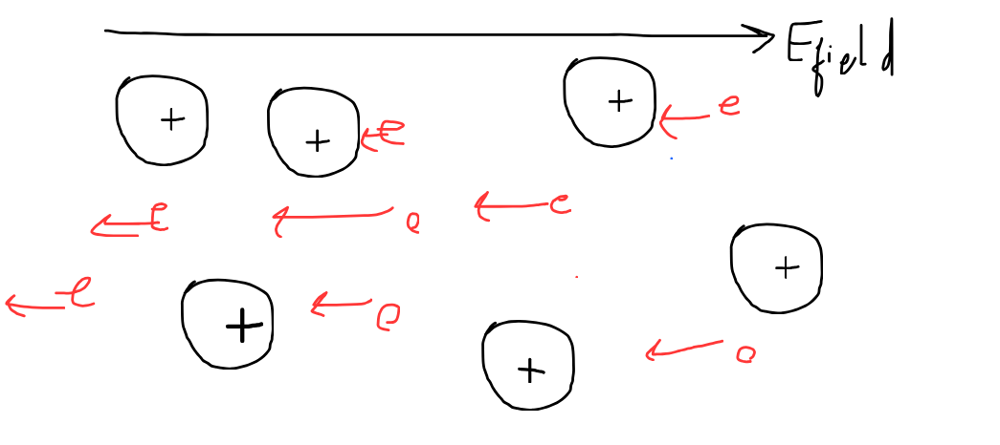
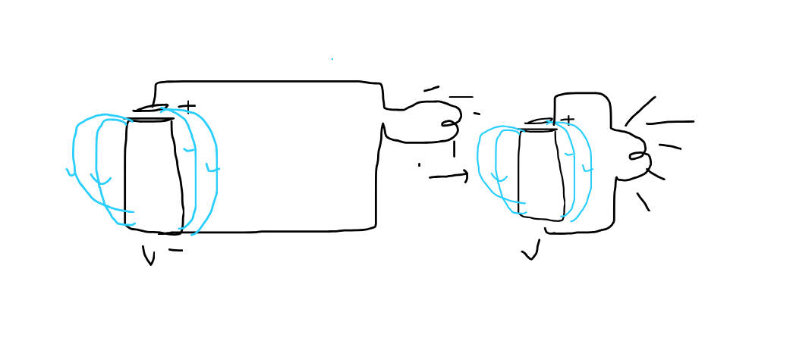
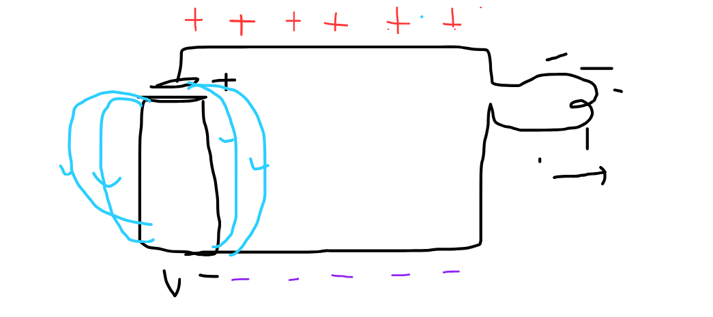

A light bulb as you have seen in your home is a device that works on the principle of energy
Ahmm you may see by my skill issued diagram, that this is just a simple circuit showing what a light buld is Now if we see in detail, lemme zoom here

Usually in a conductor (which the bulb is made), we see there are free electrons and also some lattice positive charge strucutre, and when the buld is off, or there is nothing some sort of external factor disturbing it, the electrons move random in any direction hence, its so randome we can't model it
This is a randomly moving electron, now imagine its in the whole conductor i shown you above wouldn't it be chaotic
Now lets work up upon our definitions
Since we defined Current to be rate of a charge per unit time thorugh a cross sectional area, thats current (where the charge conventially is taken positive)
Now since you would be wondering if an electron moves randomly like this in a conductor why doesn't the current produce due to its movement
That is genuinely a good question, usually we think it should produce a cuurent, but it wouldn't becuase

Cause if we randomly pick any cross section area, the motion is so random, that the chrages going though a surface cancels each other out and net current produced = 0
Yup the answer is Yes, it would and hence thats what an electric field does, it fixate the direction of electrons moving which fixate the direction of current

Now imagine you are being collided to a lattice, since you have huge amount of kinetic energy due to the field, you transfer it to the stationalry lattice which then vibrates over the period producing heat, and then due to that heat the bulb glows
now due to the energy produced we could see that we get our heat bulb and then it get converts to light, but the main question is who made the electric field happened
many people think its the battery which causes these electric field but the answer is suprisings
Battery is the wrong answer becuase, lets get you with a thought experiement, if we move the circuit closer to the the battrery, the elcectric field should be increased, since its inversly sqaure dependent on the distance, so the electrons should have a greater kinetic energy meaning, that the electrons should disspapte energy more into the lattice structre making more glowing of bulb?? But is it actually ture or does it actually happens?

So if thats not the case, then how does the electron experience field and how does the bulb glow then??
The answer is preety cool, So usually the electrons experience field from the circuit itself!!!
Since the battery makes the potential difference around the circuit inducing charges so it looks something like this:

so due to these induced charges, the electric field gets produced which make the bulb glow !!